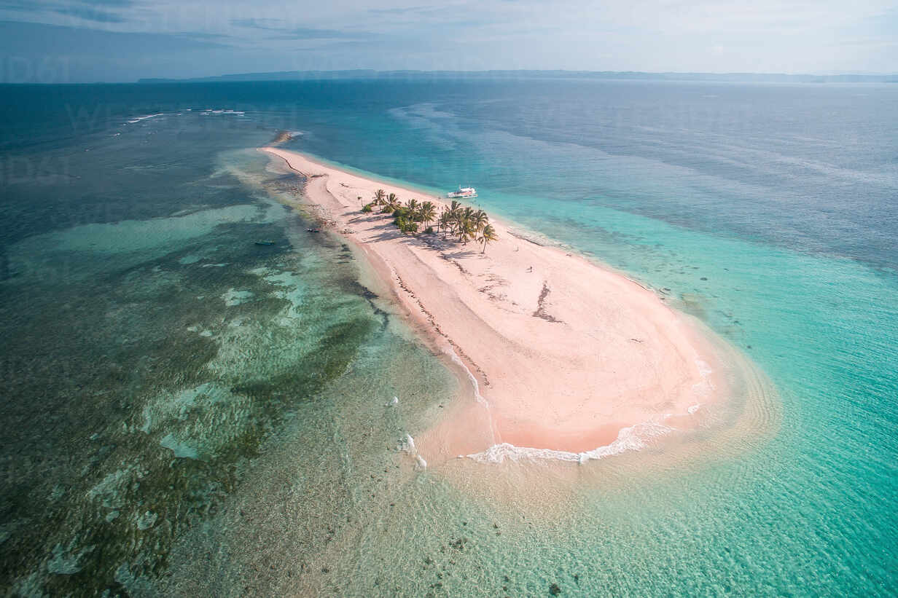
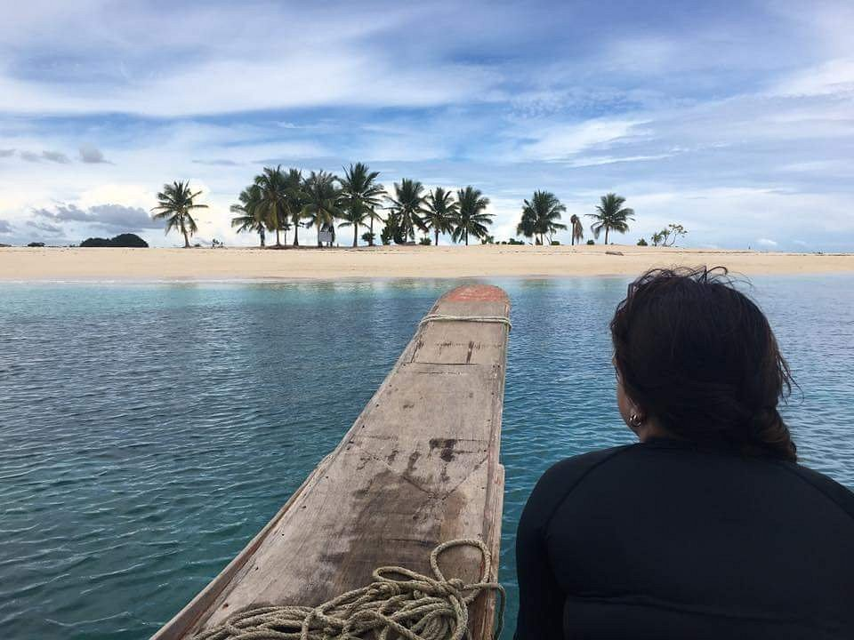
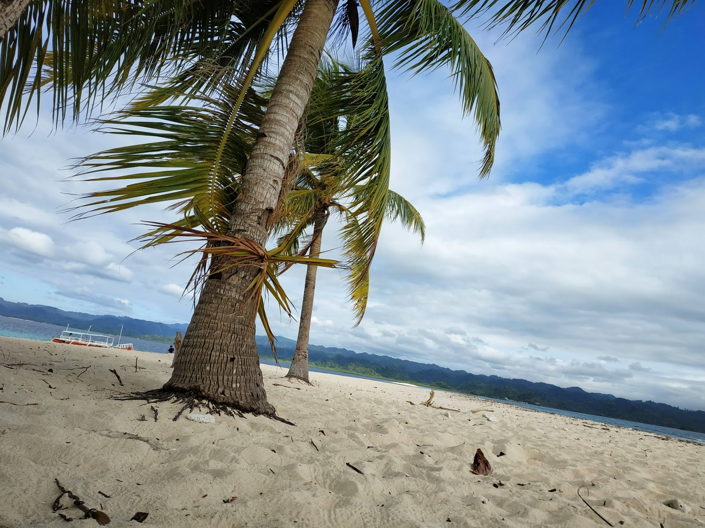

Hagonoy Island is one of the most popular islands within the Britania Group of Islands, known for its powdery white sand and clear turquoise waters. The island features a long sandbar that stretches into the sea, creating a picturesque and inviting landscape. Its shallow waters make it ideal for swimming and wading, especially for beginners. The surrounding ocean is calm, adding to the relaxing atmosphere of the island. The natural beauty of the area attracts visitors seeking a tropical paradise experience.
The island’s environment is characterized by bright blue waters and fine white sand that contrast beautifully under sunlight. It is relatively small, allowing visitors to explore it easily on foot. The open space provides a sense of freedom and tranquility. The gentle sea breeze enhances the overall experience of relaxation. Visitors often describe the island as peaceful and visually stunning. Overall, Hagonoy Island offers a classic tropical beach setting.


Hagonoy Island has long been used by local fishermen as a resting area during fishing trips. Its strategic location within the Britania Group made it a convenient stop for those navigating the waters. Over time, its natural beauty attracted attention from tourists and travelers. The island gradually became a highlight of island-hopping tours in the area. Its development as a tourist destination was driven by growing interest in coastal tourism.
Local communities have contributed to the preservation and promotion of the island. Efforts have been made to maintain cleanliness and protect marine life. Tourism has provided economic opportunities for residents in nearby areas. Despite increased visitors, the island has retained its natural charm. Sustainable practices have been encouraged to preserve its beauty. Today, it stands as one of the most visited islands in Surigao del Sur.
Hagonoy Island offers limited but essential amenities to support tourism. Temporary cottages and shaded areas are sometimes available for visitors. Boats used for island hopping serve as the main means of transportation. Visitors are encouraged to bring their own food and supplies. The island remains largely undeveloped to preserve its natural condition.
Activities on the island focus on enjoying the beach and surrounding waters. Swimming is one of the main attractions due to the calm and clear sea. Sunbathing is also popular because of the open sandy area. Snorkeling allows visitors to observe marine life beneath the surface. Walking along the sandbar provides a unique and scenic experience. These activities highlight the island’s natural beauty.


Tourists visiting Hagonoy Island can enjoy a variety of relaxing and enjoyable activities. Swimming in the shallow waters is safe and refreshing. Walking along the sandbar offers a unique perspective of the surrounding ocean. Photography is highly popular due to the island’s picturesque scenery. Visitors often capture the beauty of the clear water and white sand.
Group activities such as picnics are commonly enjoyed on the island. The peaceful environment makes it ideal for relaxation. Some visitors explore nearby islands as part of island-hopping tours. The calm atmosphere encourages leisurely activities. The simplicity of the experience adds to its charm. Overall, Hagonoy Island offers a memorable tropical getaway.
Hagonoy Island is accessible through San Agustin in Surigao del Sur. Travelers must first reach the mainland by bus or private vehicle. From the port area, boats are available for island-hopping tours. The boat ride to the island is short and scenic. Travel time depends on sea conditions.
Hagonoy Island exemplifies sustainable, low-impact tourism in Surigao del Sur. Its largely unspoiled ecosystem makes it valuable for marine biodiversity and for promoting eco-tourism in the Caraga Region. Authorities encourage responsible practices such as reef-safe sunscreen use and waste-free visits to maintain its pristine condition.